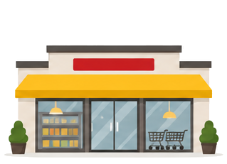
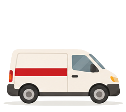

Kishlay Group, modern trade playbook
Winning the shelf: how Kishlay earns eye level without buying it
How to win the mother’s eye level (130 to 160 cm) and the child’s (100 to 130 cm) when national brands already hold it and Vishal sells its own label beside them, without simply paying more margin. Also: what to say in the interview. Companion to the 9-slide deck and the live model.


The one line answer. “I would not buy the shelf, I would earn it. We start on a lower shelf in five strong stores with a written performance clause: if our packs beat the category’s sales per facing for eight weeks, we move to eye level. We win on what national brands cannot match from far away, next day refill from a plant 15 km from the store and fresher stock, and we help Vishal’s own label instead of fighting it.”
1The problem in plain words
- Eye level is the most contested space in the store. Where a pack sits matters more than how many facings it gets (Drèze, Hoch and Purk, Wharton). External
- National brands hold it today, and Vishal sells its own label namkeen (First Crop) right beside them at 7 to 13% more per gram than branded bulk packs. External, JM Financial
- Vishal buys all its own label from outside vendors, 839 of them in FY25. That makes Vishal a buyer of manufacturing, not only a seller of brands. External, JM Financial
- Paying more margin is the lazy answer. Three points of margin is worth about ₹970 a store a month in our model, and it teaches the buyer to ask for more. Calculation, model Store_PnL
2How a category manager decides
She is measured on her category, not on our brand. Eye level goes to the packs that make her numbers.
| What she is measured on | What it means for us |
|---|---|
| Sales per sq ft and per facing | Our weekly units per SKU per store must beat the category average. Prove it in five stores. |
| Category growth, not brand swapping | Show incremental sales against two control stores, not sales taken from Haldiram’s. |
| Margin per sq ft, own label share | Do not attack her own label; supply it and sit beside it. |
| Out of stocks and stock turns | When a pack is missing, 31% of shoppers buy elsewhere and 26% switch brand (Gruen and others, 2002). Our next day refill fixes this. Study not re-checked |
| Basket size | The 1 kg family pack (₹249) and multipacks (₹60) raise the bill. Vishal’s average bill is about ₹875. Secondary |
| Ease and clean paperwork | Shelf ready cartons, our merchandisers, claims backed by PO and photo. |
3Twelve ways to earn eye level without paying more margin
Prove it
1
Performance placement clause
Start on a lower shelf. If our sales per facing beat the category average for eight weeks, we move to eye level. We earn the shelf; we do not rent it.
2
A test she can trust
Five strong stores and two matched control stores, two four week cycles. We report extra category sales, not swapped sales.
3
Sale or return in the pilot
We take back unsold stock at our cost for eight weeks. It removes her risk and costs us little across five stores.
4
Strong managers first
New items placed with high quality store managers reach 28.5% more stores (24% against 5% odds of entry). Pick those stores for the test. External, HBS 2025
Make it easy for the store
5
Freshness and fill rate as a weapon
Our plant is 15 km from the Guwahati stores: next day refill, 95% fill rate, at least two thirds of shelf life left on delivery. No brand shipping from outside the region can promise that.
6
Our people do the shelf work
Shelf ready cartons, merchandiser visits two to three times a week, planogram photos every week. Less store labour for her.
7
Clean claims
Every promotion claim backed by PO, store photo and debit note. Audited claims recover 60 to 85 bps of modern trade turnover; finance teams prefer suppliers who create no disputes. External, Terra Insight
8
Data she does not have
Weekly sell out by store, stock out alerts, our 300 shopper interviews and a quarterly review of the Northeast namkeen shelf. We become her advisor on regional snacks.
Grow her category, then partner with her own label
9
Fill the regional gap
Jolokia Chanachur, Jhalmuri and 40 Aana are tastes national brands and own label do not offer. They bring shoppers in, especially young ones proud of Assam.
10
Make her own label, cheaper and fresher
Offer to pack Vishal’s own label namkeen at Amingaon: lower freight, fresher stock, and a chance to close its 7 to 13% per gram premium. In return, ask for range listing and eye level for our regional heroes, which do not compete with her own label.
Pull shoppers to the shelf
11
Kids’ pull at kids’ eye level
Water Toy Rings with collectibles (“collect them all”) and FunBox at 100 to 130 cm, plus clip strips near checkout. The child asks; the parent buys the multipack.
12
Festivals and pairings
Bihu, Durga Puja and Diwali gift tins on end caps, namkeen placed next to tea, local creators and app ads that send shoppers to the test stores.
4The first meeting with the category manager
Bring
- A one page view of the Northeast namkeen shelf: photos, price per gram, gaps
- The five store test with its gates
- Our supply promise in writing
- The own label packing quote
Ask
- Five test stores
- Anchors at her eye level, Rings and Noodles at kids’ eye level, or a lower shelf with the performance clause
- Weekly store sales data
- No listing fee for the pilot
Offer
- Weekend promoters and sampling
- Merchandisers and shelf ready cartons
- Sale or return for eight weeks
- Festive promotions shared 50:50
Close: “If two of the five stores clear the gate for two cycles, we move to the next 20 stores, and we talk terms then, on numbers we both trust.”
5Objections and answers
| She says | We answer |
|---|---|
| “Eye level is booked by national brands.” | “We are not asking for their space on day one. Give us a lower shelf and a performance clause. If our sales per facing beat the category for eight weeks, we move up. You only promote what earns it.” |
| “We have our own label namkeen.” | “Let us make it for you, fresher and cheaper from 15 km away. Our regional range sits beside it, not against it.” |
| “Pay a listing fee or a higher margin.” | “We would rather fund what moves the shelf: promoters, sampling, kids’ collectibles, festival end caps and sale or return. Terms for the next stores follow the numbers.” |
| “Regional brands go out of stock.” | “Our plant is 15 km away. Next day refill and a 95% fill rate, written into the agreement.” |
| “Your price per gram is higher than Haldiram’s.” | “Our 1 kg family pack matches it at ₹0.249 a gram. The 400 g sells on taste and local preference, and we will show you the weekly numbers.” |
| “What will you give me beyond product?” | “Weekly sell out by store, stock out alerts, shopper interviews and a quarterly category review for regional snacks.” |
6Ten lines to stand out in the interview
- “I would not buy the shelf; I would earn it with a performance placement clause.”
- “Our unfair advantage is distance: a plant 15 km from the store means next day refill and fresher stock.”
- “Help Vishal’s own label instead of fighting it. Pack it for them, and use that trust to place our regional heroes.”
- “The pack, not the channel, makes the money: ₹13 a kg in a ₹10 pouch, ₹45 in a 400 g pack, ₹82 in kids’ multipacks.”
- “A child decides at 1.1 metres and a mother at 1.4 metres. I plan the shelf around those two eye lines.”
- “Five stores, two controls, two four week cycles: a test a category manager can trust.”
- “Fix EBITDA first: 215 bps from purchase, the plant and trade spend, 7% by month 15, before we go beyond Assam.”
- “Bring her data she does not have. That turns us from a supplier into her advisor on regional snacks.”
- “Sale or return in the pilot takes away her risk, and across five stores it costs us very little.”
- “Grow with the market, not ahead of it: about 10% a year, with modern trade and quick commerce rising from 2% to nearly 4% of sales.”
7The first 90 days
Days 1 to 30
Pull FY26 sales, EBITDA and SKU costing. Shelf audit in 10 stores, 300 shopper interviews, vehicle and distributor check. Book the buyer meetings.
Days 31 to 60
Sign the five test stores, planogram and shelf material, hire weekend promoters, agree sale or return, send the own label packing quote. Purchase plans the gram buy at harvest.
Days 61 to 90
Pilot live in January 2027 with a weekly dashboard. Read the first four week cycle and prepare the pack for stores 6 onwards.